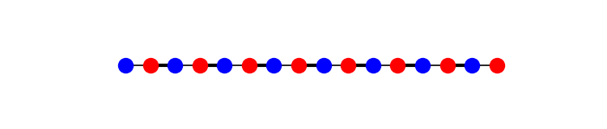
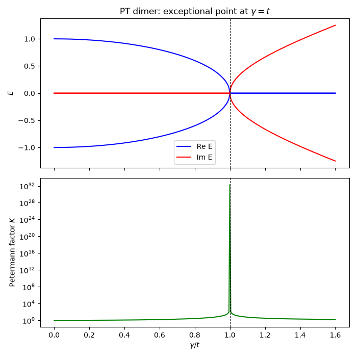
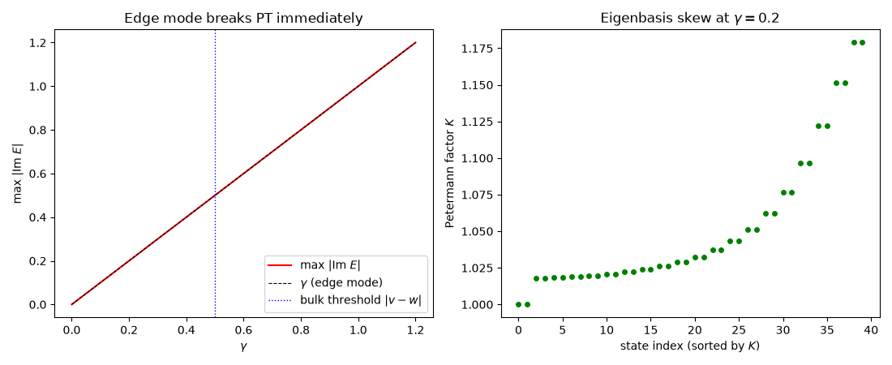

Note
Go to the end to download the full example code.
PT Symmetry, Exceptional Points, and a Selectively Amplified Edge Mode#
A lattice with balanced gain and loss – imaginary onsite energies \(\pm i\gamma\) on the two sublattices – has a non-Hermitian Hamiltonian, but it commutes with the combined parity-time operation \(\mathcal{PT}\). Bender and Boettcher’s 1998 observation was that such a Hamiltonian can still have an entirely real spectrum, up to a threshold in \(\gamma\) at which eigenvalues collide pairwise and split into complex-conjugate pairs.
That collision is not an ordinary degeneracy. At an exceptional
point the two eigenvectors coalesce as well, and the Hamiltonian
stops being diagonalizable. Its approach is measured by the
Petermann factor \(K_n\) (get_petermann()),
built from the left and right eigenvectors,
which equals 1 for a Hermitian (orthogonal-eigenbasis) problem and diverges at an exceptional point.
import numpy as np
import matplotlib.pyplot as plt
from tbkit.lattice import Lattice
from tbkit.system import System
from tbkit.plot import Plot
unit_cell = [{'tag': 'a', 'r0': (0., 0.)}, {'tag': 'b', 'r0': (0.5, 0.)}]
prim_vec = [(1., 0.)]
t = 1.
def pt_chain(gamma, hoppings, n_cells):
'''Open chain with gain (+i*gamma) on sublattice a, loss on b.'''
lat = Lattice(unit_cell=unit_cell, prim_vec=prim_vec)
lat.get_lattice(n1=n_cells)
sys = System(lat)
sys.set_onsite({'a': 1j * gamma, 'b': -1j * gamma})
sys.set_hopping_manual(hoppings)
sys.get_ham()
sys.get_eig(eigenvec=True, left=True)
sys.get_petermann()
return lat, sys
The chain#
A dimerized (SSH) chain, drawn with each bond’s width proportional to its amplitude. Sublattice ‘a’ (one colour) carries gain \(+i\gamma\) and sublattice ‘b’ (the other) carries loss \(-i\gamma\); the geometry itself is Hermitian and unchanged, all the non-Hermiticity sitting in the onsite energies.

The simplest exceptional point: a gain/loss dimer#
Two sites, coupled by t, with gain and loss \(\pm i\gamma\):
The spectrum is real for \(\gamma<t\) even though H is not Hermitian, and becomes purely imaginary for \(\gamma>t\). The exceptional point sits exactly at \(\gamma=t\), where \(K = 1/(1-\gamma^2/t^2)\) diverges.
for gamma in [0., 0.5, 0.9, 0.99]:
_, dimer = pt_chain(gamma, {(0, 1): t}, n_cells=1)
predicted_E = np.sqrt(t**2 - gamma**2)
predicted_K = 1. / (1. - gamma**2 / t**2)
print('gamma={:.2f}: E={}, K={} (predicted |E|={:.4f}, K={:.4f}).'
.format(gamma, np.round(dimer.en, 4), np.round(dimer.petermann, 4),
predicted_E, predicted_K))
assert np.allclose(np.abs(dimer.en.imag), 0., atol=1e-10)
assert np.allclose(np.sort(dimer.en.real), [-predicted_E, predicted_E], atol=1e-8)
assert np.allclose(dimer.petermann, predicted_K, rtol=1e-6)
# Past the threshold the spectrum is purely imaginary: PT is broken.
_, broken = pt_chain(1.5 * t, {(0, 1): t}, n_cells=1)
print('gamma=1.50: E={} -- purely imaginary, PT-broken phase.'
.format(np.round(broken.en, 4)))
assert np.allclose(broken.en.real, 0., atol=1e-10)
assert np.allclose(np.sort(broken.en.imag), [-np.sqrt(1.5**2 - 1), np.sqrt(1.5**2 - 1)],
atol=1e-8)
gammas = np.linspace(0., 1.6, 321)
en_re, en_im, kn = [], [], []
for gamma in gammas:
_, d = pt_chain(gamma, {(0, 1): t}, n_cells=1)
en_re.append(np.sort(d.en.real))
en_im.append(np.sort(d.en.imag))
kn.append(d.petermann.max())
fig, (ax1, ax2) = plt.subplots(2, 1, sharex=True, figsize=(7, 7))
ax1.plot(gammas, np.array(en_re), 'b', label='Re E')
ax1.plot(gammas, np.array(en_im), 'r', label='Im E')
ax1.axvline(t, color='k', ls='--', lw=0.8)
ax1.set_ylabel('$E$')
ax1.set_title('PT dimer: exceptional point at $\\gamma = t$')
handles, labels = ax1.get_legend_handles_labels()
ax1.legend(handles[::2], labels[::2])
ax2.semilogy(gammas, kn, 'g')
ax2.axvline(t, color='k', ls='--', lw=0.8)
ax2.set_xlabel(r'$\gamma / t$')
ax2.set_ylabel('Petermann factor $K$')
fig.tight_layout()

gamma=0.00: E=[-1. 1.], K=[1. 1.] (predicted |E|=1.0000, K=1.0000).
gamma=0.50: E=[-0.866-0.j 0.866+0.j], K=[1.3333 1.3333] (predicted |E|=0.8660, K=1.3333).
gamma=0.90: E=[-0.4359+0.j 0.4359-0.j], K=[5.2632 5.2632] (predicted |E|=0.4359, K=5.2632).
gamma=0.99: E=[-0.1411-0.j 0.1411+0.j], K=[50.2513 50.2513] (predicted |E|=0.1411, K=50.2513).
gamma=1.50: E=[0.+1.118j 0.-1.118j] -- purely imaginary, PT-broken phase.
A PT-symmetric SSH chain: the edge mode breaks PT first#
Put the same gain/loss pattern on the dimerized SSH chain of The SSH Model: Bulk-Boundary Correspondence, in its topological phase (\(w>v\)). The SSH zero modes are protected by chiral symmetry, which forces each of them to live entirely on one sublattice: the left edge mode on the gain sublattice, the right one on the loss sublattice.
They therefore feel an unbalanced imaginary potential and acquire energies \(\pm i\gamma\) at any gain, while every bulk state – which has equal weight on both sublattices – stays real until \(\gamma\) reaches the bulk gap. A uniform gain/loss pattern thus amplifies the topological mode selectively, which is how these modes were first singled out experimentally.
v, w, n_cells = 0.5, 1., 20
hoppings = {}
for n in range(n_cells):
hoppings[(2*n, 2*n + 1)] = v
if n < n_cells - 1:
hoppings[(2*n + 1, 2*n + 2)] = w
print()
for gamma in [0., 0.05, 0.2, 0.45]:
_, ssh = pt_chain(gamma, hoppings, n_cells)
complex_modes = np.abs(ssh.en.imag) > 1e-8
print('gamma={:.2f}: {} of {} states have Im E != 0; max|Im E| = {:.4f}.'
.format(gamma, complex_modes.sum(), ssh.lat.sites, np.abs(ssh.en.imag).max()))
if gamma == 0.:
assert complex_modes.sum() == 0
else:
# Exactly two -- the edge modes -- and at exactly +/- i*gamma.
assert complex_modes.sum() == 2
assert np.allclose(np.sort(ssh.en.imag[complex_modes]), [-gamma, gamma], atol=1e-8)
gamma=0.00: 0 of 40 states have Im E != 0; max|Im E| = 0.0000.
gamma=0.05: 2 of 40 states have Im E != 0; max|Im E| = 0.0500.
gamma=0.20: 2 of 40 states have Im E != 0; max|Im E| = 0.2000.
gamma=0.45: 2 of 40 states have Im E != 0; max|Im E| = 0.4500.
The amplified mode is the edge mode, on the gain sublattice#
gamma = 0.2
lat, ssh = pt_chain(gamma, hoppings, n_cells)
amplified = np.argmax(ssh.en.imag)
damped = np.argmin(ssh.en.imag)
for label, n in [('amplified', amplified), ('damped', damped)]:
intensity = np.abs(ssh.rn[:, n])**2
intensity /= intensity.sum()
weight_a = intensity[lat.coor['tag'] == 'a'].sum()
edge = intensity[:6].sum() + intensity[-6:].sum()
print('{:>9} mode: E={}, weight on gain sublattice = {:.4f}, '
'weight within 6 sites of an end = {:.4f}.'
.format(label, np.round(ssh.en[n], 4), weight_a, edge))
assert edge > 0.95
assert np.isclose(np.sum(np.abs(ssh.rn[lat.coor['tag'] == 'b', amplified])**2), 0., atol=1e-10)
assert np.isclose(np.sum(np.abs(ssh.rn[lat.coor['tag'] == 'a', damped])**2), 0., atol=1e-10)
print('The amplified mode sits entirely on the gain sublattice, the damped '
'one entirely on the loss sublattice -- exactly as chiral symmetry demands.')
amplified mode: E=(-0+0.2j), weight on gain sublattice = 1.0000, weight within 6 sites of an end = 0.9844.
damped mode: E=(-0-0.2j), weight on gain sublattice = 0.0000, weight within 6 sites of an end = 0.9844.
The amplified mode sits entirely on the gain sublattice, the damped one entirely on the loss sublattice -- exactly as chiral symmetry demands.
The bulk survives until gamma reaches the gap#
The bulk bands are \(E_\pm(k)=\pm\sqrt{|v+we^{-ik}|^2-\gamma^2}\), so the bulk stays real until \(\gamma\) reaches the smallest bulk gap half-width, \(|v-w|\).
print()
for gamma in [0.45, 0.55, 0.8]:
_, ssh_g = pt_chain(gamma, hoppings, n_cells)
n_complex = (np.abs(ssh_g.en.imag) > 1e-8).sum()
print('gamma={:.2f} ({} |v-w|={:.2f}): {} complex modes.'
.format(gamma, '<' if gamma < abs(v - w) else '>', abs(v - w), n_complex))
assert (np.abs(pt_chain(0.45, hoppings, n_cells)[1].en.imag) > 1e-8).sum() == 2
assert (np.abs(pt_chain(0.55, hoppings, n_cells)[1].en.imag) > 1e-8).sum() > 2
gamma=0.45 (< |v-w|=0.50): 2 complex modes.
gamma=0.55 (> |v-w|=0.50): 4 complex modes.
gamma=0.80 (> |v-w|=0.50): 12 complex modes.
Spectrum and Petermann factors across the chain#
fig2, (ax3, ax4) = plt.subplots(1, 2, figsize=(11, 4.5))
gamma_scan = np.linspace(0., 1.2, 121)
im_max, k_max = [], []
for g in gamma_scan:
_, s = pt_chain(g, hoppings, n_cells)
im_max.append(np.abs(s.en.imag).max())
k_max.append(s.petermann.max())
ax3.plot(gamma_scan, im_max, 'r', label=r'max $|$Im $E|$')
ax3.plot(gamma_scan, gamma_scan, 'k--', lw=0.8, label=r'$\gamma$ (edge mode)')
ax3.axvline(abs(v - w), color='b', ls=':', lw=1., label=r'bulk threshold $|v-w|$')
ax3.set_xlabel(r'$\gamma$')
ax3.set_ylabel(r'max $|$Im $E|$')
ax3.set_title('Edge mode breaks PT immediately')
ax3.legend()
_, ssh_plot = pt_chain(0.2, hoppings, n_cells)
ax4.plot(np.sort(ssh_plot.petermann), 'og', ms=4)
ax4.set_xlabel('state index (sorted by $K$)')
ax4.set_ylabel('Petermann factor $K$')
ax4.set_title(r'Eigenbasis skew at $\gamma=0.2$')
fig2.tight_layout()

Total running time of the script: (0 minutes 0.355 seconds)